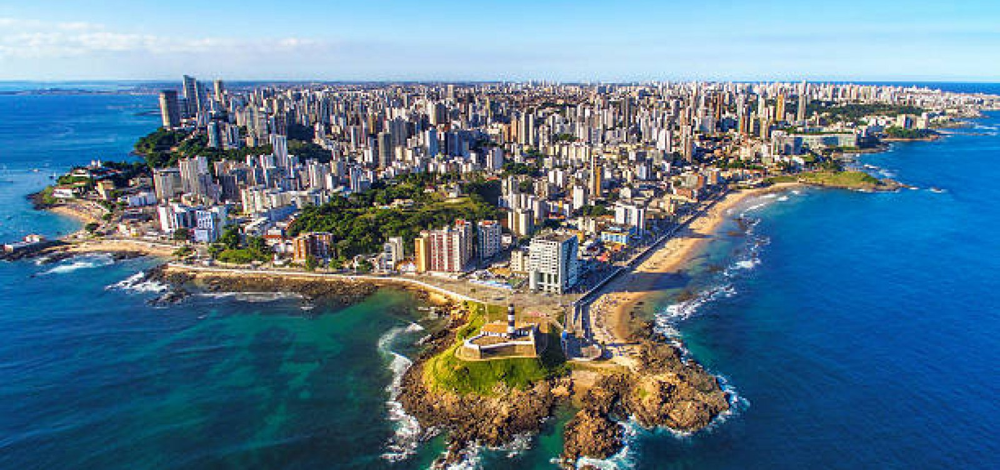
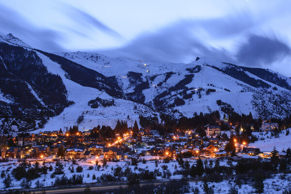

Um dos lugares mais lindos que eu ja fui. Eu tenho família em porto, eles moram na cidade do Porto, quando eu fui para lá conheci eles. É muito difícil entede-los - o sotaque é muito diferente - mas foi muito especial para mim. Me diverti muito na festa de São João do Porto. O povo de lá tem um tradição de fazer um corredor polonês e bater na cabeça das pessoas com martelinhos de plástico. Também conheci Lisboa que é a capital de Portugal. Não fiquei muito tempo lá, mas adorei como a cidade é movimentada e bonita.
Um dos lugares mais marcantes que ja fui, e concerteza o mais frio. Em Gramado é muito raro nevar, mas por sorte quando eu fui eu tive o privilégio de conseguir ver a neve. Foi muito especial por ter sido a primeira e única vez que eu vi neve, mas concerteza foi os dias que eu mais passei frio na minha vida.

Ja fui para a Bahia 2 vezes, e as duas vezes eu gostei de mais, o pessoal de lá é muito animado, nunca estão triste, o povo tem uma frase que eles sempre falam Sorria, você está na Bahia. Eu tenho família em Salvador, essa parte da família é a mais agitada que eu tenho. O carnaval de Salvador é diferenciado, isso é o que a minha família diz, pois nunca consegui passa um carnaval lá.
Sorria, você está na Bahia.
Gosto muito do Japão, Gosto de conhecer coisas diferentes, e eu acho que o Japão é o país mais diferente de todos os outros (comparando com o Brasil)
A Inglaterra tem muitos lugares legais e que eu quero conhecer, como Londres e Liverpool. Gosto muito de futebol, um dos meus sonho é ver um jogo da Premier League, eu também tenho um time que eu gosto muito, o Liverpool Futebol Clube, eu gosto muito dele por conta que o Philippe Coutinho que é meu jogador de futebol favorito, então eu gostaria muito de ver um jogo de futebol em Liverpool e conhecer a cidade de Londres, que eu acho um lugar muito chique e com monumentos lindos.

Eu gosto muito do frio, é em Bariloche e o lugar de neve que eu acho und dos mais bonitos que tem. Minha mãe já esteve em Bariloche, e ela diz que é um dos melhores lugares que ela já foi na vida dela, e isso só me deixa com mais vontade de ir pra lá.
Voltar para topo⬆️
Voltar para a Página inicial🏠